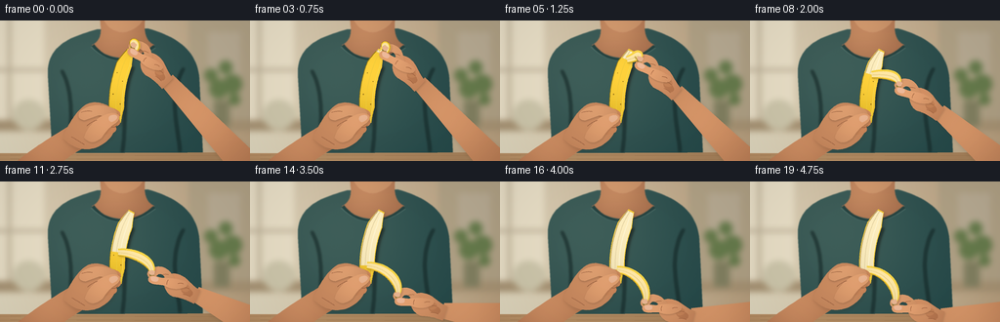
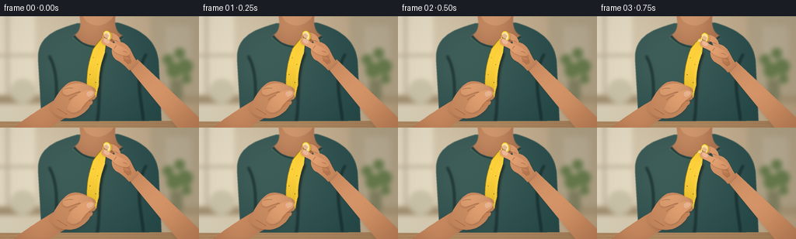

CODING AGENTS AS PIXEL WORLD MODELS
traex/GPT-6.1-Sol · motion_rationality_0007
点击播放 · 原生 RGB 像素
逐轮保存的候选
回放视频、检查图与代码变化。
每份候选均可单独播放。实际图片检查记录在下方工具轨迹中。
候选 01播放与检查图
点击播放 · 原生 RGB 像素


展开代码变化
--- 上一保存版本
+++ 本次保存版本
@@ -0,0 +1,211 @@
+from pathlib import Path
+import math
+import numpy as np
+from PIL import Image, ImageDraw, ImageFilter
+import artifact_io
+
+ROOT = Path(__file__).resolve().parent
+W,H,S=256,144,4
+SW,SH=W*S,H*S
+Y,X=np.mgrid[0:SH,0:SW].astype(float)/S
+rng=np.random.default_rng(22)
+NOISE=rng.normal(0,0.45,(SH,SW,1))
+
+def path(commands):
+ pts=[]; p=None; start=None
+ for c in commands:
+ if c[0]=='M':
+ p=np.array(c[1:],float);start=p.copy();pts.append(tuple(p))
+ elif c[0]=='L':
+ p=np.array(c[1:],float);pts.append(tuple(p))
+ elif c[0]=='C':
+ a,b,q=[np.array(c[i:i+2],float) for i in (1,3,5)]
+ for t in np.linspace(0,1,24)[1:]:
+ v=(1-t)**3*p+3*(1-t)**2*t*a+3*(1-t)*t*t*b+t**3*q
+ pts.append(tuple(v))
+ p=q
+ elif c[0]=='Q':
+ a,q=[np.array(c[i:i+2],float) for i in (1,3)]
+ for t in np.linspace(0,1,18)[1:]:pts.append(tuple((1-t)**2*p+2*t*(1-t)*a+t*t*q))
+ p=q
+ elif c[0]=='Z':pts.append(tuple(start));p=start
+ return pts
+
+def transform(pts,origin=(0,0),angle=0):
+ a=math.radians(angle);co,si=math.cos(a),math.sin(a)
+ return [(origin[0]+co*x-si*y,origin[1]+si*x+co*y) for x,y in pts]
+
+def drawshape(im,pts,color,light=None,amount=18,shadow=None,blur=0):
+ m=Image.new('L',(SW,SH));ImageDraw.Draw(m).polygon([(round(x*S),round(y*S)) for x,y in pts],fill=255)
+ if blur:m=m.filter(ImageFilter.GaussianBlur(blur*S))
+ if shadow:
+ dx,dy,r,alpha=shadow
+ sm=Image.new('L',(SW,SH));sm.paste(m,(round(dx*S),round(dy*S)))
+ sm=sm.filter(ImageFilter.GaussianBlur(r*S)).point(lambda p:int(p*alpha))
+ im.paste((43,31,20),(0,0),sm)
+ if light:
+ lx,ly,rad=light
+ shading=(np.exp(-((X-lx)**2+(Y-ly)**2)/(2*rad**2))*1.5-.65)*amount
+ else:shading=np.zeros((SH,SW))
+ arr=np.clip(np.array(color)[None,None,:]+shading[:,:,None]*np.array([1,.85,.65])+NOISE,0,255).astype('uint8')
+ im.paste(Image.fromarray(arr),(0,0),m)
+
+def shape(im,cmd,color,**kw):drawshape(im,path(cmd),color,**kw)
+def line(im,pts,fill,width=1,blur=0):
+ if blur:
+ lay=Image.new('RGBA',(SW,SH));ImageDraw.Draw(lay).line([(x*S,y*S) for x,y in pts],fill=fill,width=max(1,round(width*S)),joint='curve')
+ lay=lay.filter(ImageFilter.GaussianBlur(blur*S));im.paste(lay,(0,0),lay)
+ else:ImageDraw.Draw(im).line([(x*S,y*S) for x,y in pts],fill=fill,width=max(1,round(width*S)),joint='curve')
+
+def curve(im,cmd,col,width=.5,**kw):line(im,path(cmd),col,width,**kw)
+
+def ellipse(im,box,fill):ImageDraw.Draw(im).ellipse(tuple(v*S for v in box),fill=fill)
+
+# Soft-focus room, kept completely stable throughout the shot.
+bg_arr=np.stack([221-0.16*X+0.025*Y,210-.22*X+.045*Y,185-.25*X+.045*Y],axis=2)
+bg=Image.fromarray(np.uint8(np.clip(bg_arr+NOISE,0,255)))
+d=ImageDraw.Draw(bg)
+d.rectangle((0,0,45*S,110*S),fill=(231,221,197))
+d.rectangle((8*S,0,11*S,103*S),fill=(186,173,147));d.rectangle((0,49*S,48*S,52*S),fill=(189,176,151))
+d.rectangle((193*S,0,256*S,102*S),fill=(176,161,133))
+d.rectangle((213*S,12*S,246*S,57*S),fill=(183,170,146))
+d.line((215*S,63*S,246*S,63*S),fill=(127,114,94),width=2*S)
+d.rectangle((0,102*S,256*S,113*S),fill=(167,147,116))
+d.ellipse((13*S,81*S,46*S,112*S),fill=(204,197,170))
+d.rectangle((219*S,82*S,235*S,108*S),fill=(130,128,97))
+for x,y,r in [(224,70,10),(238,65,10),(216,56,7),(231,48,7),(240,81,6)]:
+ d.ellipse(((x-r)*S,(y-r)*S,(x+r)*S,(y+r)*S),fill=(102,123,76))
+bg=bg.filter(ImageFilter.GaussianBlur(3*S))
+# Torso: a person in a textured muted teal shirt, neck above the hands.
+shape(bg,[('M',54,144),('L',49,57),('C',47,25,72,17,99,9),('L',151,8),('C',180,16,202,30,204,60),('L',208,144),('Z',)],(47,81,79),light=(88,50,70),amount=19)
+shape(bg,[('M',101,-8),('L',149,-8),('C',147,9,147,20,158,25),('C',140,42,113,43,94,25),('C',107,19,103,5,101,-8),('Z',)],(174,118,82),light=(117,8,27),amount=28)
+shape(bg,[('M',104,-6),('L',149,-6),('C',145,5,134,12,125,12),('C',115,11,108,6,104,-6),('Z',)],(199,144,103),light=(114,0,25),amount=14)
+curve(bg,[('M',95,25),('C',111,46,139,44,158,26)],(37,66,64),3)
+curve(bg,[('M',93,27),('C',113,47,137,45,159,28)],(80,112,105),.8)
+for cmd in [[('M',63,51),('C',78,78,70,110,73,137)],[('M',188,49),('C',171,79,183,109,184,134)],[('M',136,48),('C',124,76,130,109,125,135)]]:
+ curve(bg,cmd,(33,65,64),2,blur=1.2)
+bg=bg.filter(ImageFilter.GaussianBlur(.45*S))
+# Out-of-focus wooden tabletop at the lower edge.
+shape(bg,[('M',0,136),('L',256,135),('L',256,144),('L',0,144),('Z',)],(172,134,94),light=(30,125,100),amount=13)
+for yy in [138,142]:curve(bg,[('M',0,yy),('C',80,yy-1,187,yy+1,256,yy)],(159,120,81),.4)
+
+# Banana geometry. t=0 is the stem and t=1 the lower end.
+def B(t):
+ t=np.asarray(t)
+ return np.stack([134-39*t+26*t*t,30+75*t],axis=-1)
+def banana_edge(ts,side):
+ pp=B(ts);der=np.stack([-39+52*ts,np.full_like(ts,75)],axis=-1)
+ nn=np.stack([-der[:,1],der[:,0]],axis=-1);nn/=np.linalg.norm(nn,axis=-1)[:,None]
+ ww=7.7*np.minimum(1,.42+3*ts)*np.minimum(1,.36+3*(1-ts))
+ return pp+nn*ww[:,None]*side
+
+def ribbon_curve(hinge,tip,progress):
+ # A bent peel of increasing released length, with a narrow stem at the grip.
+ a=np.array(hinge);q=np.array(tip)
+ length=float(np.linalg.norm(q-a))
+ b=a+np.array([10+11*progress, -3+4*progress])
+ c=q+np.array([7*progress,-10-4*progress])
+ ts=np.linspace(0,1,70)
+ p=np.array([(1-t)**3*a+3*(1-t)**2*t*b+3*(1-t)*t*t*c+t**3*q for t in ts])
+ tang=np.gradient(p,axis=0);norm=np.stack([-tang[:,1],tang[:,0]],axis=-1);norm/=np.maximum(.001,np.linalg.norm(norm,axis=-1)[:,None])
+ widths=(3.7+1.5*np.sin(ts*np.pi))*(1-.72*ts**7)
+ return p,norm,widths
+
+# Right hand in its own articulated coordinate system. The thumb and index pinch (0,0).
+palm=[('M',12,7),('C',20,3,30,9,34,19),('C',37,25,39,29,42,32),('L',31,43),('C',26,37,20,32,14,29),('C',8,24,7,15,12,7),('Z',)]
+index=[('M',22,15),('C',20,7,20,0,13,-4),('C',8,-7,1,-7,-2,-4),('C',-5,-1,-3,3,0,4),('C',3,5,5,2,8,2),('C',13,3,13,10,14,16),('Z',)]
+thumb=[('M',29,24),('C',21,24,14,21,9,15),('C',5,12,0,11,-3,8),('C',-6,5,-4,1,-1,1),('C',3,1,6,5,10,7),('C',17,10,23,12,29,17),('C',33,19,33,22,29,24),('Z',)]
+finger2=[('M',29,20),('C',27,12,23,7,19,6),('C',16,5,14,8,15,11),('L',20,19),('C',21,23,26,24,29,20),('Z',)]
+finger3=[('M',33,25),('C',31,20,26,15,23,14),('C',20,13,19,17,21,20),('L',25,27),('C',28,30,33,29,33,25),('Z',)]
+finger4=[('M',34,31),('C',33,26,29,24,26,24),('C',23,24,23,27,25,30),('L',29,34),('C',31,35,34,34,34,31),('Z',)]
+
+def rshape(im,cmd,origin,angle,col,li=(16,14,26),amt=19,shadow=None):
+ lt=transform([(li[0],li[1])],origin,angle)[0]
+ drawshape(im,transform(path(cmd),origin,angle),col,light=(*lt,li[2]),amount=amt,shadow=shadow)
+def rcurve(im,cmd,origin,angle,col,width):curvepts=transform(path(cmd),origin,angle);line(im,curvepts,col,width)
+
+def left_hand(im,shift):
+ # Supporting hand: forearm below, palm cupped around the banana's heel.
+ ox,oy=shift
+ def ss(cmd,col,light=(90,105,37),amount=18,shadow=None):
+ drawshape(im,transform(path(cmd),(ox,oy)),col,light=(light[0]+ox,light[1]+oy,light[2]),amount=amount,shadow=shadow)
+ ss([('M',15,146),('C',29,134,52,119,69,109),('L',90,128),('C',75,136,64,144,56,151),('Z',)],(179,119,81),light=(48,123,35),amount=30)
+ ss([('M',64,120),('C',69,108,78,92,88,86),('C',96,81,111,85,116,92),('C',122,104,118,118,106,126),('C',94,135,76,134,64,120),('Z',)],(188,127,87),shadow=(1,2,2,.15))
+ # Far-side fingers wrap about the stem on its right edge.
+ for y,x in [(95,116),(103,116),(110,112)]:
+ ss([('M',x-15,y-5),('C',x-4,y-8,x+7,y-4,x+7,y+1),('C',x+7,y+6,x-3,y+8,x-14,y+5),('Z',)],(188,123,81),light=(x,y-3,15),amount=18)
+ ss([('M',82,93),('C',90,86,102,85,113,89),('C',120,91,122,97,117,100),('C',112,102,107,97,101,97),('L',87,102),('C',80,102,79,97,82,93),('Z',)],(205,144,101),light=(93,90,21),amount=20,shadow=(0,1,1,.23))
+ # Thumb opposes the fingers and lies diagonally across the lower fruit.
+ ss([('M',86,120),('C',88,111,96,103,102,99),('C',108,96,116,93,120,96),('C',124,98,122,103,117,106),('C',111,110,108,114,104,120),('C',98,125,92,127,86,120),('Z',)],(209,146,102),light=(107,103,21),amount=20,shadow=(.6,1,1,.18))
+ ss([('M',112,98),('C',115,96,120,96,120,99),('C',120,101,117,103,114,104),('C',112,103,110,101,112,98),('Z',)],(228,175,141),light=(115,98,7),amount=7)
+ for cmd in [[('M',73,119),('C',80,123,83,125,86,127)],[('M',89,108),('C',92,105,96,103,99,102)],[('M',83,94),('Q',89,92,94,93)],[('M',114,109),('Q',118,110,120,107)]]:
+ line(im,transform(path(cmd),(ox,oy)),(141,87,58),.45)
+
+frames=[]
+for frame in range(20):
+ u=frame/19
+ # A short pinch, a single smooth peel, then a brief hold of the opened banana.
+ t=np.clip((u-.075)/.80,0,1)
+ p=t*t*(3-2*t)
+ split=.018+.79*p
+ tip=np.array([135+19*math.sin(p*math.pi*.78),27+99*p])
+ sway=np.array([.7*math.sin(u*math.pi),.35*math.sin(u*math.pi*1.4)])
+ tip+=sway
+ angle=-29*p
+ im=bg.copy()
+ # Right forearm runs from the wrist out of frame, aligned to hand orientation.
+ wrist=np.array(transform([(36,34)],tip,angle)[0]);lower=np.array([257,154-15*p])
+ v=lower-wrist;n=np.array([-v[1],v[0]])/np.linalg.norm(v)
+ armpts=[tuple(wrist+n*8),tuple(wrist-n*8),tuple(lower-n*16),tuple(lower+n*16)]
+ drawshape(im,armpts,(192,130,89),light=(*(wrist*.55+lower*.45-8),47),amount=30,shadow=(1,2,2,.12))
+ rshape(im,palm,tip,angle,(194,131,90),amt=24,shadow=(1,1,1,.15))
+ for f,col in [(finger4,(175,112,74)),(finger3,(185,121,80)),(finger2,(197,132,90))]:rshape(im,f,tip,angle,col,amt=20)
+ rshape(im,index,tip,angle,(207,144,100),li=(7,-3,17),amt=18,shadow=(0,1,.8,.18))
+ # Banana shadow and entire yellow skin.
+ ts=np.linspace(0,1,90)
+ outline=np.concatenate([banana_edge(ts,1),banana_edge(ts,-1)[::-1]])+sway
+ drawshape(im,outline,(226,185,41),light=(124,53,37),amount=35,shadow=(2,3,2.2,.30))
+ # Longitudinal ridges on the unpeeled yellow portion.
+ for side,c,w in [(1,(158,128,24),.7),(-.73,(250,216,77),.7),(.1,(237,202,61),.5)]:
+ pp=banana_edge(np.linspace(split,1,50),side)+sway;line(im,pp,c,w)
+ # Exposed pale fruit replaces skin above the advancing split line.
+ ts2=np.linspace(.017,split,75)
+ flesh=np.concatenate([banana_edge(ts2,.89),banana_edge(ts2,-.89)[::-1]])+sway
+ drawshape(im,flesh,(241,227,182),light=(127,41,45),amount=15)
+ if p>.01:
+ line(im,banana_edge(ts2,.83)+sway,(192,169,118),.65)
+ line(im,banana_edge(ts2,-.3)+sway,(255,246,213),.85)
+ line(im,banana_edge(ts2,.25)+sway,(218,200,151),.4)
+ # Small natural brown speckles remain fixed on the unpeeled skin.
+ for st,side,rr in [(.42,-.45,.38),(.61,.53,.44),(.74,-.5,.5),(.86,.4,.55),(.9,-.6,.35),(.33,.55,.36)]:
+ if st>split:
+ pt=banana_edge(np.array([st]),side)[0]+sway;ellipse(im,(pt[0]-rr,pt[1]-rr,pt[0]+rr,pt[1]+rr),(132,102,30))
+ # Released strip. The upper end stays continuously in the pinching fingers.
+ hinge=B(split)+sway
+ center,normal,widths=ribbon_curve(hinge,tip,p)
+ ribbon=np.concatenate([center+normal*widths[:,None],(center-normal*widths[:,None])[::-1]])
+ drawshape(im,ribbon,(230,192,48),light=(*(center[len(center)//2]-np.array([2,7])),28),amount=29,shadow=(1,1,1,.20))
+ # The concave face has pale fibrous inner pith and a gold margin.
+ inset=np.concatenate([center+normal*(widths*.64)[:,None],(center-normal*(widths*.59)[:,None])[::-1]])
+ drawshape(im,inset,(241,220,157),light=(*(center[len(center)//2]-np.array([3,5])),28),amount=17)
+ line(im,center+normal*(widths*.93)[:,None],(164,127,24),.55)
+ line(im,center-normal*(widths*.87)[:,None],(249,217,79),.7)
+ line(im,center+normal*(widths*.13)[:,None],(224,197,126),.4)
+ # Stem, grasped between fingertip and thumb.
+ stem=transform([(-1,-4),(2,-4),(3,4),(-2,4)],tip,angle)
+ drawshape(im,stem,(124,109,45),light=(*tip,7),amount=11)
+ left_hand(im,sway)
+ # Opposing thumb is foremost: index behind, thumb in front of the strip.
+ rshape(im,thumb,tip,angle,(214,149,104),li=(8,8,19),amt=20,shadow=(0,1,.7,.17))
+ rshape(im,[('M',-1,2),('C',2,2,5,4,6,6),('C',5,9,3,9,0,7),('C',-2,6,-2,3,-1,2),('Z',)],tip,angle,(234,182,151),li=(1,3,8),amt=7)
+ rshape(im,[('M',-1,-4),('C',1,-5,4,-4,5,-2),('L',3,1),('C',0,1,-2,-1,-1,-4),('Z',)],tip,angle,(227,177,142),li=(1,-3,8),amt=8)
+ for cmd in [[('M',11,4),('Q',14,4,17,6)],[('M',12,15),('Q',13,12,15,11)],[('M',24,30),('Q',28,32,30,35)],[('M',23,18),('Q',26,18,28,20)],[('M',28,24),('Q',30,25,32,27)]]:
+ rcurve(im,cmd,tip,angle,(158,98,64),.45)
+ # A restrained cinematic color treatment and camera vignette.
+ ar=np.asarray(im).astype(float)
+ vig=1-.07*((X-122)**2/(160**2)+(Y-68)**2/(120**2))
+ ar=ar*vig[:,:,None]
+ out=Image.fromarray(np.uint8(np.clip(ar,0,255))).resize((W,H),Image.Resampling.LANCZOS)
+ frames.append(np.array(out))
+artifact_io.save(np.stack(frames).astype(np.uint8),ROOT)
+print('Saved',len(frames),'RGB frames to',ROOT)
可观测工具轨迹
实际执行的命令与返回图片。
命令 1exit 0
/bin/bash -lc "ls -la && cat prompt.txt && printf '\\n---RULES---\\n' && cat GENERATION_RULES.md && printf '\\n---SPEC---\\n' && cat task_spec.json"
命令 2exit 0
/bin/bash -lc "cat artifact_io.py && python - <<'PY'
import numpy, PIL
print('numpy',numpy.__version__)
PY"命令 3exit 0
/bin/bash -lc "cat > generate.py <<'PY'
from pathlib import Path
import math
import numpy as np
from PIL import Image, ImageDraw, ImageFilter
import artifact_io
ROOT = Path(__file__).resolve().parent
W,H,S=256,144,4
SW,SH=W*S,H*S
Y,X=np.mgrid[0:SH,0:SW].astype(float)/S
rng=np.random.default_rng(22)
NOISE=rng.normal(0,0.45,(SH,SW,1))
def path(commands):
pts=[]; p=None; start=None
for c in commands:
if c[0]=='M':
p=np.array(c[1:],float);start=p.copy();pts.append(tuple(p))
elif c[0]=='L':
p=np.array(c[1:],float);pts.append(tuple(p))
elif c[0]=='C':
a,b,q=[np.array(c[i:i+2],float) for i in (1,3,5)]
for t in np.linspace(0,1,24)[1:]:
v=(1-t)**3*p+3*(1-t)**2*t*a+3*(1-t)*t*t*b+t**3*q
pts.append(tuple(v))
p=q
elif c[0]=='Q':
a,q=[np.array(c[i:i+2],float) for i in (1,3)]
for t in np.linspace(0,1,18)[1:]:pts.append(tuple((1-t)**2*p+2*t*(1-t)*a+t*t*q))
p=q
elif c[0]=='Z':pts.append(tuple(start));p=start
return pts
def transform(pts,origin=(0,0),angle=0):
a=math.radians(angle);co,si=math.cos(a),math.sin(a)
return [(origin[0]+co*x-si*y,origin[1]+si*x+co*y) for x,y in pts]
def drawshape(im,pts,color,light=None,amount=18,shadow=None,blur=0):
m=Image.new('L',(SW,SH));ImageDraw.Draw(m).polygon([(round(x*S),round(y*S)) for x,y in pts],fill=255)
if blur:m=m.filter(ImageFilter.GaussianBlur(blur*S))
if shadow:
dx,dy,r,alpha=shadow
sm=Image.new('L',(SW,SH));sm.paste(m,(round(dx*S),round(dy*S)))
sm=sm.filter(ImageFilter.GaussianBlur(r*S)).point(lambda p:int(p*alpha))
im.paste((43,31,20),(0,0),sm)
if light:
lx,ly,rad=light
shading=(np.exp(-((X-lx)**2+(Y-ly)**2)/(2*rad**2))*1.5-.65)*amount
else:shading=np.zeros((SH,SW))
arr=np.clip(np.array(color)[None,None,:]+shading[:,:,None]*np.array([1,.85,.65])+NOISE,0,255).astype('uint8')
im.paste(Image.fromarray(arr),(0,0),m)
def shape(im,cmd,color,**kw):drawshape(im,path(cmd),color,**kw)
def line(im,pts,fill,width=1,blur=0):
if blur:
lay=Image.new('RGBA',(SW,SH));ImageDraw.Draw(lay).line([(x*S,y*S) for x,y in pts],fill=fill,width=max(1,round(width*S)),joint='curve')
lay=lay.filter(ImageFilter.GaussianBlur(blur*S));im.paste(lay,(0,0),lay)
else:ImageDraw.Draw(im).line([(x*S,y*S) for x,y in pts],fill=fill,width=max(1,round(width*S)),joint='curve')
def curve(im,cmd,col,width=.5,**kw):line(im,path(cmd),col,width,**kw)
def ellipse(im,box,fill):ImageDraw.Draw(im).ellipse(tuple(v*S for v in box),fill=fill)
# Soft-focus room, kept completely stable throughout the shot.
bg_arr=np.stack([221-0.16*X+0.025*Y,210-.22*X+.045*Y,185-.25*X+.045*Y],axis=2)
bg=Image.fromarray(np.uint8(np.clip(bg_arr+NOISE,0,255)))
d=ImageDraw.Draw(bg)
d.rectangle((0,0,45*S,110*S),fill=(231,221,197))
d.rectangle((8*S,0,11*S,103*S),fill=(186,173,147));d.rectangle((0,49*S,48*S,52*S),fill=(189,176,151))
d.rectangle((193*S,0,256*S,102*S),fill=(176,161,133))
d.rectangle((213*S,12*S,246*S,57*S),fill=(183,170,146))
d.line((215*S,63*S,246*S,63*S),fill=(127,114,94),width=2*S)
d.rectangle((0,102*S,256*S,113*S),fill=(167,147,116))
d.ellipse((13*S,81*S,46*S,112*S),fill=(204,197,170))
d.rectangle((219*S,82*S,235*S,108*S),fill=(130,128,97))
for x,y,r in [(224,70,10),(238,65,10),(216,56,7),(231,48,7),(240,81,6)]:
d.ellipse(((x-r)*S,(y-r)*S,(x+r)*S,(y+r)*S),fill=(102,123,76))
bg=bg.filter(ImageFilter.GaussianBlur(3*S))
# Torso: a person in a textured muted teal shirt, neck above the hands.
shape(bg,[('M',54,144),('L',49,57),('C',47,25,72,17,99,9),('L',151,8),('C',180,16,202,30,204,60),('L',208,144),('Z',)],(47,81,79),light=(88,50,70),amount=19)
shape(bg,[('M',101,-8),('L',149,-8),('C',147,9,147,20,158,25),('C',140,42,113,43,94,25),('C',107,19,103,5,101,-8),('Z',)],(174,118,82),light=(117,8,27),amount=28)
shape(bg,[('M',104,-6),('L',149,-6),('C',145,5,134,12,125,12),('C',115,11,108,6,104,-6),('Z',)],(199,144,103),light=(114,0,25),amount=14)
curve(bg,[('M',95,25),('C',111,46,139,44,158,26)],(37,66,64),3)
curve(bg,[('M',93,27),('C',113,47,137,45,159,28)],(80,112,105),.8)
for cmd in [[('M',63,51),('C',78,78,70,110,73,137)],[('M',188,49),('C',171,79,183,109,184,134)],[('M',136,48),('C',124,76,130,109,125,135)]]:
curve(bg,cmd,(33,65,64),2,blur=1.2)
bg=bg.filter(ImageFilter.GaussianBlur(.45*S))
# Out-of-focus wooden tabletop at the lower edge.
shape(bg,[('M',0,136),('L',256,135),('L',256,144),('L',0,144),('Z',)],(172,134,94),light=(30,125,100),amount=13)
for yy in [138,142]:curve(bg,[('M',0,yy),('C',80,yy-1,187,yy+1,256,yy)],(159,120,81),.4)
# Banana geometry. t=0 is the stem and t=1 the lower end.
def B(t):
t=np.asarray(t)
return np.stack([134-39*t+26*t*t,30+75*t],axis=-1)
def banana_edge(ts,side):
pp=B(ts);der=np.stack([-39+52*ts,np.full_like(ts,75)],axis=-1)
nn=np.stack([-der[:,1],der[:,0]],axis=-1);nn/=np.linalg.norm(nn,axis=-1)[:,None]
ww=7.7*np.minimum(1,.42+3*ts)*np.minimum(1,.36+3*(1-ts))
return pp+nn*ww[:,None]*side
def ribbon_curve(hinge,tip,progress):
# A bent peel of increasing released length, with a narrow stem at the grip.
a=np.array(hinge);q=np.array(tip)
length=float(np.linalg.norm(q-a))
b=a+np.array([10+11*progress, -3+4*progress])
c=q+np.array([7*progress,-10-4*progress])
ts=np.linspace(0,1,70)
p=np.array([(1-t)**3*a+3*(1-t)**2*t*b+3*(1-t)*t*t*c+t**3*q for t in ts])
tang=np.gradient(p,axis=0);norm=np.stack([-tang[:,1],tang[:,0]],axis=-1);norm/=np.maximum(.001,np.linalg.norm(norm,axis=-1)[:,None])
widths=(3.7+1.5*np.sin(ts*np.pi))*(1-.72*ts**7)
return p,norm,widths
# Right hand in its own articulated coordinate system. The thumb and index pinch (0,0).
palm=[('M',12,7),('C',20,3,30,9,34,19),('C',37,25,39,29,42,32),('L',31,43),('C',26,37,20,32,14,29),('C',8,24,7,15,12,7),('Z',)]
index=[('M',22,15),('C',20,7,20,0,13,-4),('C',8,-7,1,-7,-2,-4),('C',-5,-1,-3,3,0,4),('C',3,5,5,2,8,2),('C',13,3,13,10,14,16),('Z',)]
thumb=[('M',29,24),('C',21,24,14,21,9,15),('C',5,12,0,11,-3,8),('C',-6,5,-4,1,-1,1),('C',3,1,6,5,10,7),('C',17,10,23,12,29,17),('C',33,19,33,22,29,24),('Z',)]
finger2=[('M',29,20),('C',27,12,23,7,19,6),('C',16,5,14,8,15,11),('L',20,19),('C',21,23,26,24,29,20),('Z',)]
finger3=[('M',33,25),('C',31,20,26,15,23,14),('C',20,13,19,17,21,20),('L',25,27),('C',28,30,33,29,33,25),('Z',)]
finger4=[('M',34,31),('C',33,26,29,24,26,24),('C',23,24,23,27,25,30),('L',29,34),('C',31,35,34,34,34,31),('Z',)]
def rshape(im,cmd,origin,angle,col,li=(16,14,26),amt=19,shadow=None):
lt=transform([(li[0],li[1])],origin,angle)[0]
drawshape(im,transform(path(cmd),origin,angle),col,light=(*lt,li[2]),amount=amt,shadow=shadow)
def rcurve(im,cmd,origin,angle,col,width):curvepts=transform(path(cmd),origin,angle);line(im,curvepts,col,width)
def left_hand(im,shift):
# Supporting hand: forearm below, palm cupped around the banana's heel.
ox,oy=shift
def ss(cmd,col,light=(90,105,37),amount=18,shadow=None):
drawshape(im,transform(path(cmd),(ox,oy)),col,light=(light[0]+ox,light[1]+oy,light[2]),amount=amount,shadow=shadow)
ss([('M',15,146),('C',29,134,52,119,69,109),('L',90,128),('C',75,136,64,144,56,151),('Z',)],(179,119,81),light=(48,123,35),amount=30)
ss([('M',64,120),('C',69,108,78,92,88,86),('C',96,81,111,85,116,92),('C',122,104,118,118,106,126),('C',94,135,76,134,64,120),('Z',)],(188,127,87),shadow=(1,2,2,.15))
# Far-side fingers wrap about the stem on its right edge.
for y,x in [(95,116),(103,116),(110,112)]:
ss([('M',x-15,y-5),('C',x-4,y-8,x+7,y-4,x+7,y+1),('C',x+7,y+6,x-3,y+8,x-14,y+5),('Z',)],(188,123,81),light=(x,y-3,15),amount=18)
ss([('M',82,93),('C',90,86,102,85,113,89),('C',120,91,122,97,117,100),('C',112,102,107,97,101,97),('L',87,102),('C',80,102,79,97,82,93),('Z',)],(205,144,101),light=(93,90,21),amount=20,shadow=(0,1,1,.23))
# Thumb opposes the fingers and lies diagonally across the lower fruit.
ss([('M',86,120),('C',88,111,96,103,102,99),('C',108,96,116,93,120,96),('C',124,98,122,103,117,106),('C',111,110,108,114,104,120),('C',98,125,92,127,86,120),('Z',)],(209,146,102),light=(107,103,21),amount=20,shadow=(.6,1,1,.18))
ss([('M',112,98),('C',115,96,120,96,120,99),('C',120,101,117,103,114,104),('C',112,103,110,101,112,98),('Z',)],(228,175,141),light=(115,98,7),amount=7)
for cmd in [[('M',73,119),('C',80,123,83,125,86,127)],[('M',89,108),('C',92,105,96,103,99,102)],[('M',83,94),('Q',89,92,94,93)],[('M',114,109),('Q',118,110,120,107)]]:
line(im,transform(path(cmd),(ox,oy)),(141,87,58),.45)
frames=[]
for frame in range(20):
u=frame/19
# A short pinch, a single smooth peel, then a brief hold of the opened banana.
t=np.clip((u-.075)/.80,0,1)
p=t*t*(3-2*t)
split=.018+.79*p
tip=np.array([135+19*math.sin(p*math.pi*.78),27+99*p])
sway=np.array([.7*math.sin(u*math.pi),.35*math.sin(u*math.pi*1.4)])
tip+=sway
angle=-29*p
im=bg.copy()
# Right forearm runs from the wrist out of frame, aligned to hand orientation.
wrist=np.array(transform([(36,34)],tip,angle)[0]);lower=np.array([257,154-15*p])
v=lower-wrist;n=np.array([-v[1],v[0]])/np.linalg.norm(v)
armpts=[tuple(wrist+n*8),tuple(wrist-n*8),tuple(lower-n*16),tuple(lower+n*16)]
drawshape(im,armpts,(192,130,89),light=(*(wrist*.55+lower*.45-8),47),amount=30,shadow=(1,2,2,.12))
rshape(im,palm,tip,angle,(194,131,90),amt=24,shadow=(1,1,1,.15))
for f,col in [(finger4,(175,112,74)),(finger3,(185,121,80)),(finger2,(197,132,90))]:rshape(im,f,tip,angle,col,amt=20)
rshape(im,index,tip,angle,(207,144,100),li=(7,-3,17),amt=18,shadow=(0,1,.8,.18))
# Banana shadow and entire yellow skin.
ts=np.linspace(0,1,90)
outline=np.concatenate([banana_edge(ts,1),banana_edge(ts,-1)[::-1]])+sway
drawshape(im,outline,(226,185,41),light=(124,53,37),amount=35,shadow=(2,3,2.2,.30))
# Longitudinal ridges on the unpeeled yellow portion.
for side,c,w in [(1,(158,128,24),.7),(-.73,(250,216,77),.7),(.1,(237,202,61),.5)]:
pp=banana_edge(np.linspace(split,1,50),side)+sway;line(im,pp,c,w)
# Exposed pale fruit replaces skin above the advancing split line.
ts2=np.linspace(.017,split,75)
flesh=np.concatenate([banana_edge(ts2,.89),banana_edge(ts2,-.89)[::-1]])+sway
drawshape(im,flesh,(241,227,182),light=(127,41,45),amount=15)
if p>.01:
line(im,banana_edge(ts2,.83)+sway,(192,169,118),.65)
line(im,banana_edge(ts2,-.3)+sway,(255,246,213),.85)
line(im,banana_edge(ts2,.25)+sway,(218,200,151),.4)
# Small natural brown speckles remain fixed on the unpeeled skin.
for st,side,rr in [(.42,-.45,.38),(.61,.53,.44),(.74,-.5,.5),(.86,.4,.55),(.9,-.6,.35),(.33,.55,.36)]:
if st>split:
pt=banana_edge(np.array([st]),side)[0]+sway;ellipse(im,(pt[0]-rr,pt[1]-rr,pt[0]+rr,pt[1]+rr),(132,102,30))
# Released strip. The upper end stays continuously in the pinching fingers.
hinge=B(split)+sway
center,normal,widths=ribbon_curve(hinge,tip,p)
ribbon=np.concatenate([center+normal*widths[:,None],(center-normal*widths[:,None])[::-1]])
drawshape(im,ribbon,(230,192,48),light=(*(center[len(center)//2]-np.array([2,7])),28),amount=29,shadow=(1,1,1,.20))
# The concave face has pale fibrous inner pith and a gold margin.
inset=np.concatenate([center+normal*(widths*.64)[:,None],(center-normal*(widths*.59)[:,None])[::-1]])
drawshape(im,inset,(241,220,157),light=(*(center[len(center)//2]-np.array([3,5])),28),amount=17)
line(im,center+normal*(widths*.93)[:,None],(164,127,24),.55)
line(im,center-normal*(widths*.87)[:,None],(249,217,79),.7)
line(im,center+normal*(widths*.13)[:,None],(224,197,126),.4)
# Stem, grasped between fingertip and thumb.
stem=transform([(-1,-4),(2,-4),(3,4),(-2,4)],tip,angle)
drawshape(im,stem,(124,109,45),light=(*tip,7),amount=11)
left_hand(im,sway)
# Opposing thumb is foremost: index behind, thumb in front of the strip.
rshape(im,thumb,tip,angle,(214,149,104),li=(8,8,19),amt=20,shadow=(0,1,.7,.17))
rshape(im,[('M',-1,2),('C',2,2,5,4,6,6),('C',5,9,3,9,0,7),('C',-2,6,-2,3,-1,2),('Z',)],tip,angle,(234,182,151),li=(1,3,8),amt=7)
rshape(im,[('M',-1,-4),('C',1,-5,4,-4,5,-2),('L',3,1),('C',0,1,-2,-1,-1,-4),('Z',)],tip,angle,(227,177,142),li=(1,-3,8),amt=8)
for cmd in [[('M',11,4),('Q',14,4,17,6)],[('M',12,15),('Q',13,12,15,11)],[('M',24,30),('Q',28,32,30,35)],[('M',23,18),('Q',26,18,28,20)],[('M',28,24),('Q',30,25,32,27)]]:
rcurve(im,cmd,tip,angle,(158,98,64),.45)
# A restrained cinematic color treatment and camera vignette.
ar=np.asarray(im).astype(float)
vig=1-.07*((X-122)**2/(160**2)+(Y-68)**2/(120**2))
ar=ar*vig[:,:,None]
out=Image.fromarray(np.uint8(np.clip(ar,0,255))).resize((W,H),Image.Resampling.LANCZOS)
frames.append(np.array(out))
artifact_io.save(np.stack(frames).astype(np.uint8),ROOT)
print('Saved',len(frames),'RGB frames to',ROOT)
PY
python generate.py"命令 4exit 0
/bin/bash -lc "python - <<'PY'
from pathlib import Path
import numpy as np
from PIL import Image
p=Path('.')
a=np.load('pixels.npz')['pixels']
print('pixels:', a.shape, a.dtype)
print('frames:', len(list((p/'frames').glob('*.png'))))
print('RGB:', Image.open('frames/00.png').mode)
print('player:', (p/'index.html').is_file(), 'generator:', (p/'generate.py').is_file())
PY"视觉工具实际返回图片 1

保存候选 1 份；完成命令 4 次；可验证图片返回 1 张。原始 API 响应与完整日志保留在本地。